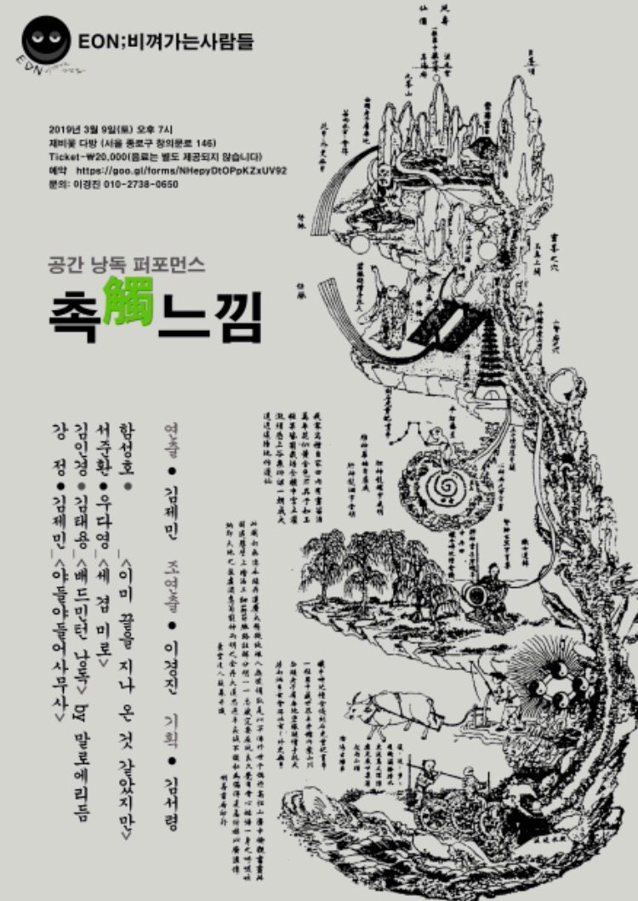

Performance — 2019
Touching Feeling촉觸느낌 — 공간 낭독 퍼포먼스
시인·소설가와 퍼포머가 짝을 이뤄, 오래된 다방의 공간 곳곳에서 낭독을 퍼포먼스로 확장한다 — 텍스트가 몸에 닿는 감각, 촉(觸).
Poets and novelists pair with performers, expanding the act of reading into performance across an old dabang teahouse — the sensation of text touching the body: chok (觸).
‘촉觸느낌’은 문학 낭독회의 형식을 공간 퍼포먼스로 확장한 작업입니다. 시인과 소설가가 자신의 텍스트를 들고 퍼포머와 짝을 이루고, 서울 종로의 오래된 다방 ‘제비꽃 다방’의 구석구석이 무대가 됩니다. 관객은 한 자리에 앉아 관람하는 대신 공간을 따라 이동하며, 빛과 몸, 사물과 목소리를 통과해 텍스트를 ‘만지듯’ 감각하게 됩니다.
제목의 ‘촉(觸)’은 닿음의 감각입니다. 활자로 읽는 문학이 아니라, 낭독하는 목소리의 결·조명의 깜빡임·몸의 실루엣으로 전해지는 문학 — 읽기와 공연 사이의 경계에서 텍스트와 관객이 서로 닿는 순간을 실험합니다.
‘Touching Feeling (촉觸느낌)’ expands the format of the literary reading into a site-specific performance. Poets and novelists pair with performers, and every corner of Jebiflower Dabang — an old teahouse in Jongno, Seoul — becomes a stage. Rather than watching from a seat, the audience moves through the space, sensing the text as if by touch, through light, bodies, objects, and voices. The ‘chok (觸)’ of the title is the sense of contact: literature carried not in print but in the grain of a reading voice, the flicker of a lamp, the silhouette of a body — an experiment in the moment where text and audience touch, on the boundary between reading and performance.
- 연출
- Direction
- Kim Jae Min (김제민)
- 조연출
- Assistant Director
- 이경진
- 기획
- Production
- 김서령
- 참여 작가·퍼포머
- Writers & Performers
- 강정 · 함성호 · 김인경 · 김태용 · 서준환 · 우다영 · 김제민
- 키워드
- Keywords
- reading performance · site-specific · touch · poetry & body
프로그램 — 네 개의 낭독 퍼포먼스
Program — Four Reading Performances
작가와 퍼포머, 넷의 짝
Four pairings of writer and performer
01
야들야들어사무사
Yadeul-yadeul Eosa-musa
강정 (시) × 김제민 (퍼포먼스)
Kang Jeong (poetry) × Kim Jae Min (performance)
02
이미 끝을 지나온 것 같았지만
Though It Seemed the End Had Passed
함성호 (시)
Ham Seong-ho (poetry)
03
배드민턴 낭독
Badminton Reading
김인경 × 김태용 — 말과 리듬의 랠리
Kim In-kyung × Kim Tae-yong — a rally of words and rhythm
04
세 겹 미로
Threefold Labyrinth
서준환 × 우다영 (소설)
Seo Jun-hwan × Woo Da-young (fiction)
창작 노트 — 야들야들어사무사
Creation Note — Yadeul-yadeul Eosa-musa
빛을 주고받으며, 몸에 시를 투사하다
Trading light, projecting poems onto the body
시인 강정과 김제민이 짝을 이룬 ‘야들야들어사무사’는 스탠드 조명과 프로젝터, 목소리와 몸만으로 이루어진 이인무(二人舞)에 가깝습니다. 어눌한 리듬으로 껐다 켜지는 스탠드 불빛 속에서, 퍼포머는 암전에만 움직이고 빛이 켜지면 멈춥니다 — ‘무궁화 꽃이 피었습니다’처럼. 낭독 또한 빛의 리듬에 묶여, 불이 꺼져야 시가 낭독되고 켜지면 멈춥니다.
이후 두 사람은 스탠드와 프로젝터로 빛을 주고받고, 공간과 벗은 몸 위에 시의 텍스트가 투사됩니다. 낭독자는 몸 위를 흐르는 텍스트를 쫓아 읽고, 몸은 아주 느린 한국무용으로 움직입니다. ‘야들 야들 어사 무사’라는 구절의 반복 속에서 시·빛·몸·목소리가 한 겹씩 포개어지는 구성입니다.
Paired with poet Kang Jeong, ‘Yadeul-yadeul Eosa-musa’ is close to a duet made only of a floor lamp, a projector, voices, and bodies. Under lamplight that flickers on and off in a halting rhythm, the performer moves only in blackout and freezes in the light — like a game of ‘Red Light, Green Light.’ The reading, too, is bound to the rhythm of light: poems are read only in darkness. The two then trade light between lamp and projector, casting the poem’s text across the space and onto a bared body; the reader chases the text as it drifts over skin, while the body moves in a very slow traditional Korean dance. Through the repetition of the phrase ‘yadeul yadeul eosa musa,’ poem, light, body, and voice fold over one another, layer by layer.
- 구성 요소
- Elements
- 스탠드 조명 · 프로젝터 · 텍스트 투사 · 낭독 · 한국무용
- Floor lamp · projector · projected text · reading · Korean dance
- 함께 보기
- Related
- 시와 낭독의 계보 — The Child Who Writes Poetry (2021)A lineage of poetry & reading — The Child Who Writes Poetry (2021)
Jebiflower Dabang, Seoul — 2019